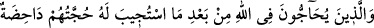
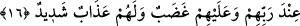

Onlar dünyayı terk ettiler ve fitnelerden korktular
Dünyaya bakıp şu gerçeği iyice anladılar
Burası diriler için kalıcı bir yurd değildir
Neticede bu dünyayı bir deniz sayıp
Sâlih amelleri kendilerine gemi edindiler.
Mesnevi’de şöyle der:
Sen de Edhem gibi saltanatı çabucak bir kenara bırak ki
Bu şekilde onun gibi ebedî bir saltanata kavuşasın.
Doğrusu bu âlem ruhların zindanıdır
Hemen çölünüze doğru gidin.
16. Dâveti kabul edildikten sonra, Allah hakkında tartışmaya girenlerin delilleri,
Rableri katında boştur. Onlar için bir gazap, yine onlar için çetin bir azap vardır.
“Dâveti kabul edildikten,” kamu tarafından genel kabul görüp delili ve yolu açık
olduğu için bu dine girildikten “sonra Allah hakkında tartışmaya girenlerin,” açık-
seçik ortada olan hakka karşı kin tuttukları için peygamberlerle tartışanların “delîlleri,
Rableri katında boştur.”
İnsanların Peygamber (s.a.)’in dâvetine icâbet edip dine girmelerinden maksad,
onların bu dine dâvet edilmiş olmalarıdır.
Bu âyette şuna da işâret vardır: İnsanlar ruhlar âleminde Allah Teâlâ’nın: “Ben sizin
Rabbiniz değilmiyim?” (el-Arâf, 7/172) suâline “evet” diye cevap vererek bu misak
gününde dâvete icâbet etmişlerdir. Sonra müşrikler ruhlar âleminden bedenler âlemine
inince yapılan bu sözleşme ve ikrarı unutarak Allah’ın dîni hakkında bir takım
tartışmalara ve inkârlara kalkışmışlardır. Mü’minler ise böyle davranmayıp tasdik ve
ikrarlarında sâbit kalmışlardır.
Hâfız der ki:
Dost, ezel sabahı fecrinden ebed akşamı sonuna kadar,
Verdiği söz ve yaptığı anlaşmaya sâdık olandır.
Onların huccetleri Allah katında zâil ve bâtıldır. Yani, hiçbir şeydir ve kalıcı bir şey
değildir. Hatta onların hiç huccetleri yoktur. Bunların bâtıl delil ve dâvâlarından
“huccet” diye bahsedilmesi, “mücârâtu’l-hasm” yani muhâlif ve düşman tarafıyla bir
zaman paralel yürüyüp sonra onu tökezletmek kabilindendir.